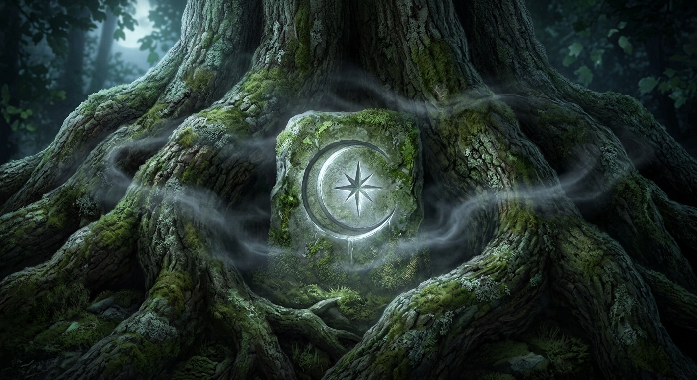

Quelques minutes plus tard, arriva enfin à l'extrémité du sentier. Le vieux chêne se dressait devant elle. Immense. Bien plus immense qu'elle ne l'avait imaginé. Ses branches noires s'étendaient dans toutes les directions comme les bras d'un géant endormi. À sa lumière, la lune semblait minuscule.
Pourtant, connaissait cet arbre depuis toujours. Combien de fois avait-elle joué près de ses racines lorsqu'elle était plus jeune ? Combien de cabanes avait-elle tenté d'y construire ? Et pourtant... Elle avait l'impression de le découvrir pour la première fois. Comme si l'arbre avait changé. Ou comme si quelque chose l'empêchait jusque-là de le voir tel qu'il était réellement.
Une légère brume argentée flottait tout autour du tronc. Elle ondulait paresseusement entre les racines avant de disparaître dans l'herbe humide. fronça les sourcils. Elle n'avait jamais vu de brume aussi étrange. À certains moments, elle aurait juré y distinguer des formes fugitives. Des silhouettes. Des chemins. Puis tout disparaissait aussitôt.
Le silence était devenu total. Plus de vent. Plus d'insectes. Plus aucun chant nocturne. Comme si le vieux chêne retenait le monde entier dans son ombre.
Alors qu'elle avançait encore de quelques pas, une faible lueur argentée surgit soudain entre les racines. Elle ne dura qu'un instant. Un simple éclat. Mais cette fois, en était certaine. Elle ne l'avait pas imaginé.
Le cœur battant, elle s'approcha. Entre deux racines épaisses, quelque chose dépassait du sol. Une pierre. Une pierre ancienne, presque entièrement recouverte de mousse. Et sur sa surface était gravé un symbole qu'elle connaissait déjà.
Un croissant de lune entourant une étoile.
